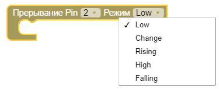

Pin на платах поддерживающие аппаратное прерывание:
Arduino UNO NANO MINI
2
3
Arduino Mega2560
2
3
21
20
19
18
Arduino Leonardo
2
3
0
1
7

- LOW вызывает прерывание, когда на порту LOW.
- CHANGE прерывание вызывается при смене значения на порту, с LOW на HIGH и наоборот.
- RISING прерывание вызывается только при смене значения на порту с LOW на HIGH.
- HIGH вызывает прерывание, когда на порту HIGH.
- FALLING прерывание вызывается только при смене значения на порту с HIGH на LOW.
Запрещается использовать блоки внутри функции аппаратного прерывания:
1.Не пытайтесь использовать функцию Время / Задержки.
2.Вы можете получить время, вызвав Миллисекунды, однако оно не будет увеличиваются.
3.Не используйте вывод в Последовательный-порт.
4.Не пытайтесь читать данные с Последовательного-порта.